Enfermeiro que não argumenta com ciência infelizmente não é valorizado como deveria.
A prática da enfermagem exige mais do que habilidades técnicas; exige uma base teórica sólida. As teorias aqui apresentadas são os pilares que sustentam nossa profissão como ciência.
1. TEORIA AMBIENTAL (Florence Nightingale)
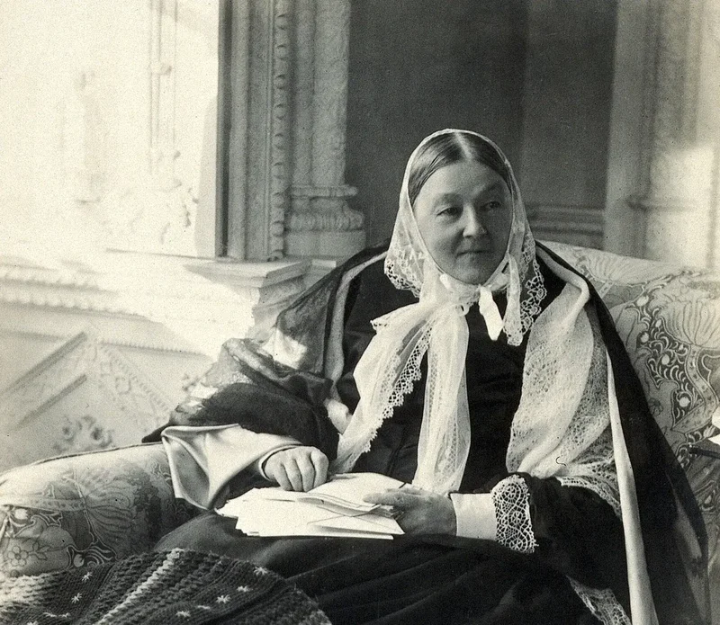
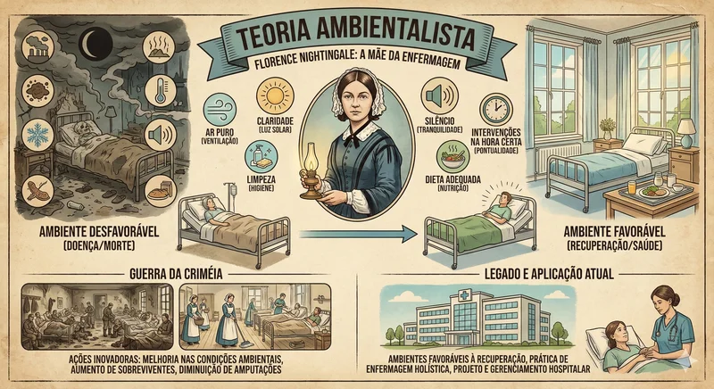
Ano: 1859 | País: Inglaterra
Florence Nightingale revolucionou a enfermagem estabelecendo que o ambiente físico é fundamental para a recuperação da saúde. Sua teoria enfatiza que ambientes limpos, arejados e bem iluminados promovem a cura, enquanto ambientes sujos e mal ventilados contribuem para a doença e morte. A teoria estabelece cinco elementos essenciais: ar puro, água pura, drenagem eficiente, limpeza e luz.
Exemplos no Cotidiano da Enfermagem:
- Controle rigoroso de infecção hospitalar através de assepsia e antissepsia
- Manutenção da limpeza e organização dos ambientes hospitalares
- Ventilação adequada dos ambientes de cuidado
- Controle de iluminação e ruído para promover o descanso do paciente
- Gerenciamento de resíduos hospitalares
Onde São Empregadas:
- Protocolos de controle de infecção hospitalar
- Diretrizes de saneamento ambiental
- Normas de construção de hospitais
- Protocolos de limpeza hospitalar
- Políticas de segurança do paciente
Livro de Referência: NIGHTINGALE, F. Notas sobre enfermagem: o que é e o que não é. São Paulo: Cortez, 2013.
2. TEORIA DAS NECESSIDADES HUMANAS BÁSICAS (Wanda Horta)
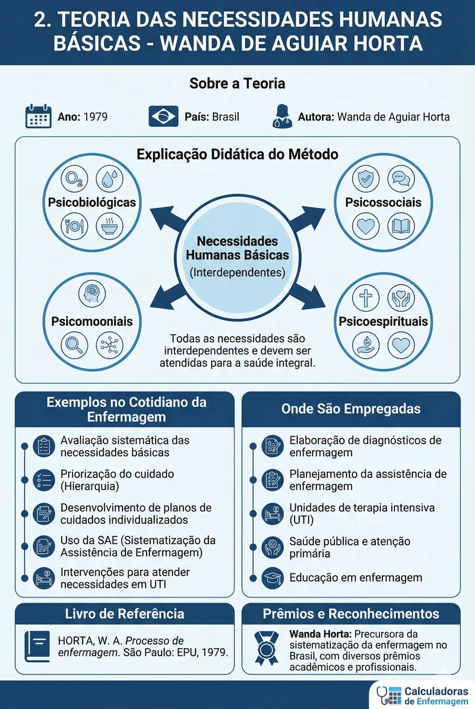
Ano: 1979 | País: Brasil
Wanda Horta desenvolveu uma teoria que classifica as necessidades humanas em três grupos: psicobiológicas (oxigênio, água, alimentação, eliminação), psicossociais (segurança, comunicação, amor, educação) e psicoespirituais (religião, credos, valores). A teoria enfatiza que todas as necessidades são interdependentes e devem ser atendidas para manter a saúde integral da pessoa.
Exemplos no Cotidiano da Enfermagem:
- Avaliação sistemática das necessidades básicas do paciente
- Priorização do cuidado baseada na hierarquia das necessidades
- Desenvolvimento de planos de cuidados individualizados
- Uso da SAE (Sistematização da Assistência de Enfermagem)
- Intervenções para atender necessidades básicas em UTI
Onde São Empregadas:
- Elaboração de diagnósticos de enfermagem
- Planejamento da assistência de enfermagem
- Unidades de terapia intensiva
- Saúde pública e atenção primária
- Educação em enfermagem
Livro de Referência: HORTA, W. A. Processo de enfermagem. São Paulo: EPU, 1979.
3. TEORIA DO AUTOCUIDADO (Dorothea Orem)
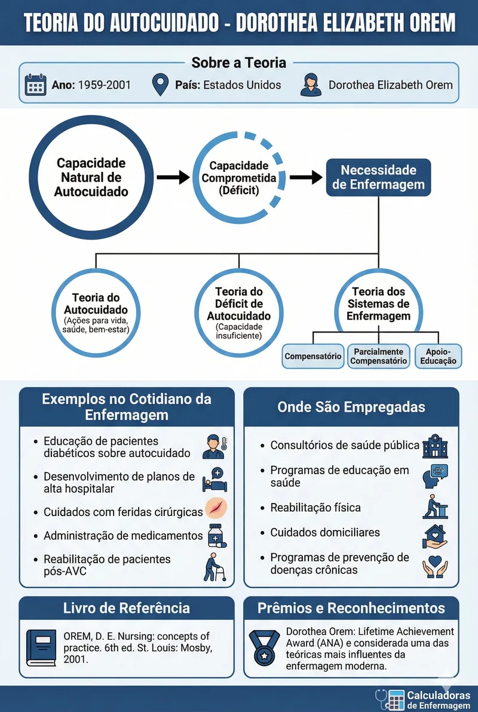
Ano: 1959-2001 | País: Estados Unidos
A teoria de Orem estabelece que as pessoas têm a capacidade natural de cuidar de si mesmas, mas quando esta capacidade está comprometida, surge a necessidade de enfermagem. A teoria compreende três teorias interconectadas: Teoria do Autocuidado (ações que a pessoa realiza para manter a vida, saúde e bem-estar), Teoria do Déficit de Autocuidado (quando a capacidade de autocuidado é insuficiente) e Teoria dos Sistemas de Enfermagem (sistemas de cuidado compensatório, parcialmente compensatório e de apoio-educação).
Exemplos no Cotidiano da Enfermagem:
- Educação de pacientes diabéticos sobre autocuidado
- Desenvolvimento de planos de alta hospitalar
- Cuidados com feridas cirúrgicas
- Administração de medicamentos
- Reabilitação de pacientes pós-AVC
Onde São Empregadas:
- Consultórios de saúde pública
- Programas de educação em saúde
- Reabilitação física
- Cuidados domiciliares
- Programas de prevenção de doenças crônicas
Livro de Referência: OREM, D. E. Nursing: concepts of practice. 6th ed. St. Louis: Mosby, 2001.
4. TEORIA DA ADAPTAÇÃO (Sister Callista Roy)
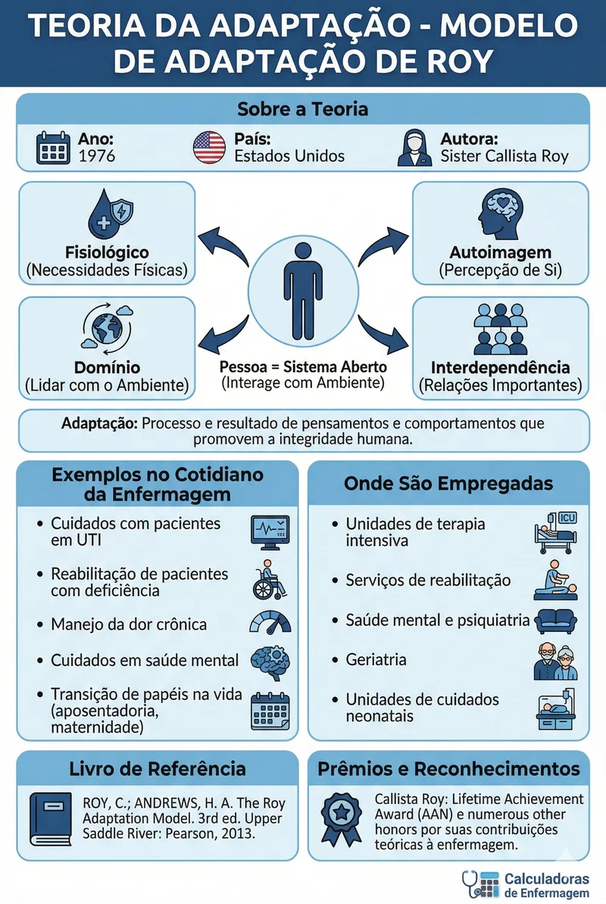
Ano: 1976 | País: Estados Unidos
O Modelo de Adaptação de Roy baseia-se na ideia de que as pessoas são sistemas abertos que interagem continuamente com o ambiente. Os processos de adaptação envolvem quatro modos: fisiológico (necessidades físicas), autoimagem (como a pessoa se percebe), domínio (como a pessoa lida com o ambiente) e interdependência (relações importantes). A adaptação é o processo e resultado de pensamentos e comportamentos que promovem a integridade humana.
Exemplos no Cotidiano da Enfermagem:
- Cuidados com pacientes em UTI
- Reabilitação de pacientes com deficiência
- Manejo da dor crônica
- Cuidados em saúde mental
- Transição de papéis na vida (aposentadoria, maternidade)
Onde São Empregadas:
- Unidades de terapia intensiva
- Serviços de reabilitação
- Saúde mental e psiquiatria
- Geriatria
- Unidades de cuidados neonatais
Livro de Referência: ROY, C.; ANDREWS, H. A. The Roy Adaptation Model. 3rd ed. Upper Saddle River: Pearson, 2013.
5. TEORIA DAS RELAÇÕES INTERPESSOAIS (Hildegard Peplau)
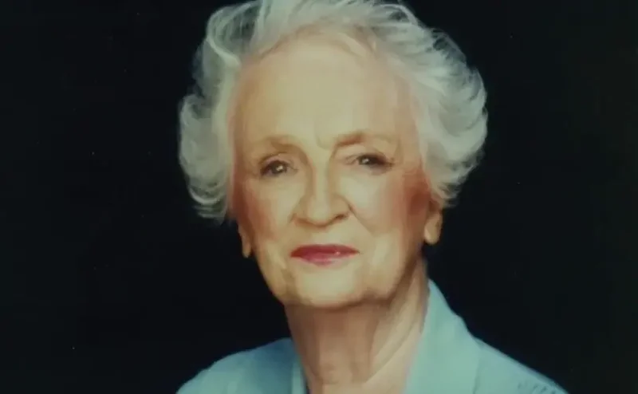
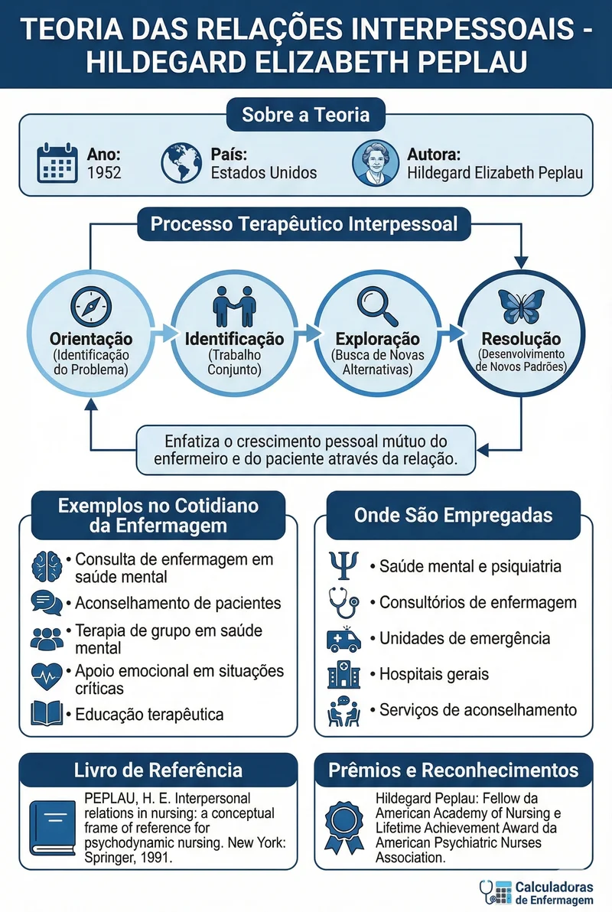
Ano: 1952 | País: Estados Unidos
Peplau definiu a enfermagem como um processo terapêutico interpessoal que ocorre entre duas ou mais pessoas. A teoria descreve quatro fases da relação terapêutica: orientação (identificação do problema), identificação (trabalho conjunto para resolver o problema), exploração (busca de novas alternativas) e resolução (desenvolvimento de novos padrões). A teoria enfatiza o crescimento pessoal mútuo do enfermeiro e do paciente através da relação.
Exemplos no Cotidiano da Enfermagem:
- Consulta de enfermagem em saúde mental
- Aconselhamento de pacientes
- Terapia de grupo em saúde mental
- Apoio emocional em situações críticas
- Educação terapêutica
Onde São Empregadas:
- Saúde mental e psiquiatria
- Consultórios de enfermagem
- Unidades de emergência
- Hospitais gerais
- Serviços de aconselhamento
Livro de Referência: PEPLAU, H. E. Interpersonal relations in nursing: a conceptual frame of reference for psychodynamic nursing. New York: Springer, 1991.
6. TEORIA DO CUIDADO HUMANO (Jean Watson)
Ano: 1979 | País: Estados Unidos
Watson desenvolveu uma teoria humanística que coloca o cuidado no centro da enfermagem. A teoria inclui dez fatores de cuidado: formação de um sistema humanístico-idealístico de valores, instalação da fé-esperança, sensibilidade para si e para os outros, desenvolvimento de uma relação de ajuda-confiança, promoção e aceitação da expressão de sentimentos positivos e negativos, uso sistemático do método científico de resolução de problemas na tomada de decisão, promoção do ensino-aprendizagem interpessoal, provisão de ambiente mental, físico, sociocultural e espiritual de suporte/protetor, assistência com satisfação das necessidades humanas e permissão para que forças fenomenológicas existam.
Exemplos no Cotidiano da Enfermagem:
- Cuidado holístico centrado na pessoa
- Presença terapêutica
- Toque terapêutico
- Comunicação empática
- Cuidado espiritual
Onde São Empregadas:
- Cuidados paliativos
- Unidades oncológicas
- Cuidados críticos
- Saúde mental
- Cuidados em finais de vida
Livro de Referência: WATSON, J. Caring science as sacred science. Philadelphia: F.A. Davis, 2005.
7. TEORIA DO CUIDADO TRANSCULTURAL (Madeleine Leininger)
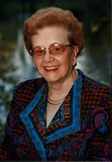
Ano: 1978 | País: Estados Unidos
Leininger desenvolveu a primeira teoria especificamente para a enfermagem transcultural, baseada no cuidado cultural. A teoria do nascer ao pôr do sol (Sunrise Model) inclui fatores culturais que influenciam o cuidado: valores, crenças, práticas, linguagem, tecnologias, religião, filosofia, políticas, economia, educação e sistema social. O objetivo é proporcionar cuidados culturalmente congruentes que sejam benéficos, satisfatórios e significativos para as pessoas.
Exemplos no Cotidiano da Enfermagem:
- Cuidados respeitosos com pacientes de diferentes culturas
- Consideração de crenças religiosas no cuidado
- Adaptação de dietas conforme valores culturais
- Respeito a práticas tradicionais de cura
- Uso de intérpretes culturais
Onde São Empregadas:
- Hospitais com diversidade cultural
- Saúde indígena
- Imigração e refúgio
- Saúde pública multicultural
- Educação em saúde intercultural
Livro de Referência: LEININGER, M.; MCFARLAND, M. R. Transcultural nursing: concepts, theories, research and practice. 3rd ed. New York: McGraw-Hill, 2002.
8. TEORIA DA INCERTEZA NA DOENÇA (Merle Mishel)
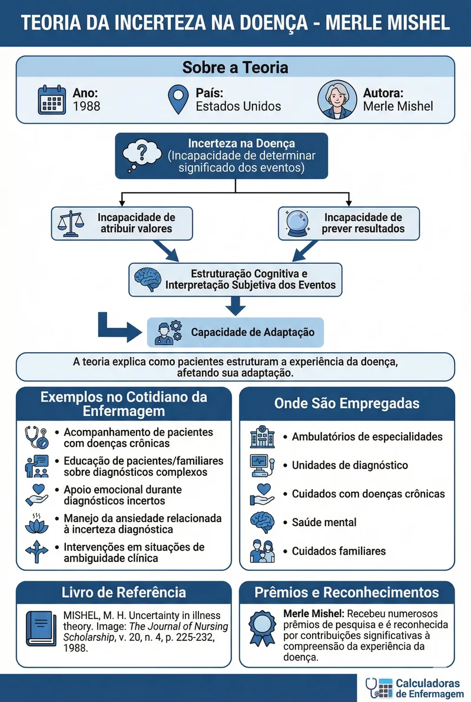
Ano: 1988 | País: Estados Unidos
Mishel definiu incerteza na doença como a incapacidade de determinar o significado dos eventos relacionados à doença, ocorrendo quando o decisor é incapaz de atribuir valores definitivos aos objetos ou eventos e/ou é incapaz de prever com segurança os resultados. A teoria explica como os pacientes cognitivamente estruturam um esquema para interpretação subjetiva de eventos relacionados à doença e como isso afeta sua capacidade de adaptação.
Exemplos no Cotidiano da Enfermagem:
- Acompanhamento de pacientes com doenças crônicas
- Educação de pacientes e familiares sobre diagnósticos complexos
- Apoio emocional durante diagnósticos incertos
- Manejo da ansiedade relacionada à incerteza diagnóstica
- Intervenções em situações de ambiguidade clínica
Onde São Empregadas:
- Ambulatórios de especialidades
- Unidades de diagnóstico
- Cuidados com doenças crônicas
- Saúde mental
- Cuidados familiares
Livro de Referência: MISHEL, M. H. Uncertainty in illness theory. Image: The Journal of Nursing Scholarship, v. 20, n. 4, p. 225-232, 1988.
9. TEORIA DO SISTEMA DE METAS (Imogene King)
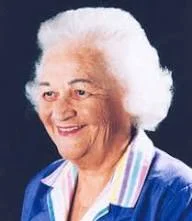
Ano: 1981 | País: Estados Unidos
A teoria de King foca na relação enfermeiro-paciente como um processo de transações para atingir metas específicas. A teoria inclui três sistemas interativos: sistema pessoal (indivíduo), sistema interpessoal (duas ou mais pessoas) e sistema social (grupos organizados). O processo transacional envolve percepção, comunicação, interação, transação e papel do enfermeiro. As metas são estabelecidas mutuamente pelo enfermeiro e paciente.
Exemplos no Cotidiano da Enfermagem:
- Estabelecimento de metas de tratamento conjunto
- Comunicação terapêutica eficaz
- Planejamento de alta hospitalar
- Educação em saúde
- Reabilitação de pacientes
Onde São Empregadas:
- Consultórios de enfermagem
- Programas de reabilitação
- Educação em saúde
- Cuidados domiciliares
- Gestão de casos
Livro de Referência: KING, I. M. A theory for nursing: systems, concepts, process. New York: Delmar, 1981.
10. TEORIA DOS SISTEMAS (Martha Rogers)
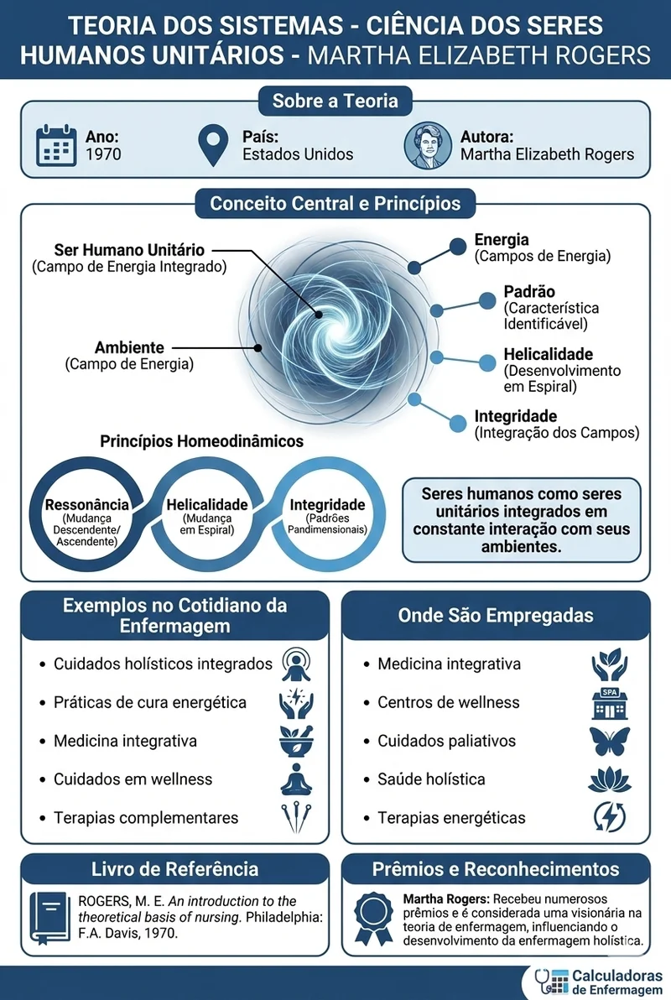
Ano: 1970 | País: Estados Unidos
Rogers desenvolveu uma teoria que vê os seres humanos como seres unitários integrados em constante interação com seus ambientes. A teoria inclui quatro postulados: energia (seres humanos são campos de energia), padrão (característica identificável do campo), helicalidade (desenvolvimento em espiral) e integridade (integração dos campos). Os três princípios homeodinâmicos são: ressonância (mudanção descendente e ascendente), helicalidade (mudança em espiral) e integridade (padrões pandimensionais).
Exemplos no Cotidiano da Enfermagem:
- Cuidados holísticos integrados
- Práticas de cura energética
- Medicina integrativa
- Cuidados em wellness
- Terapias complementares
Onde São Empregadas:
- Medicina integrativa
- Centros de wellness
- Cuidados paliativos
- Saúde holística
- Terapias energéticas
Livro de Referência: ROGERS, M. E. An introduction to the theoretical basis of nursing. Philadelphia: F.A. Davis, 1970.
11. TEORIA DO MODELO DE CONSERVAÇÃO (Myra Levine)
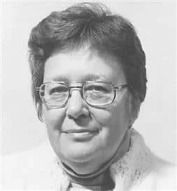
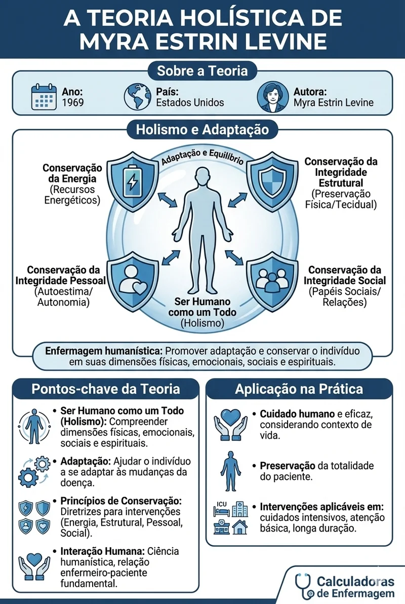
Ano: 1973 | País: Estados Unidos
Myra Levine desenvolveu uma teoria holística baseada no princípio da conservação de energia. O Modelo de Conservação enfatiza a preservação da integridade e wholeness do paciente através de quatro princípios fundamentais: conservação de energia, conservação da integridade estrutural, conservação da integridade pessoal e conservação da integridade social. A teoria foca na adaptação do paciente e na promoção da saúde através de intervenções conservadoras que preservam o que é essencial para a vida.
Exemplos no Cotidiano da Enfermagem:
- Cuidados com idosos em isolamento social
- Conservação de energia em pacientes com fadiga crônica
- Preservação da dignidade durante procedimentos invasivos
- Manutenção da integridade estrutural em pacientes acamados
- Respeito às crenças culturais e práticas sociais dos pacientes
- Gestão do sono e descanso para conservação energética
Onde São Empregadas:
- Geriatria e cuidados com idosos
- Unidades de terapia intensiva
- Cuidados paliativos
- Reabilitação física
- Saúde ocupacional
- Enfermagem comunitária
- Cuidados domiciliares
Livro de Referência: LEVINE, M. E. Introduction to clinical nursing. 2nd ed. Philadelphia: Lippincott, 1973.